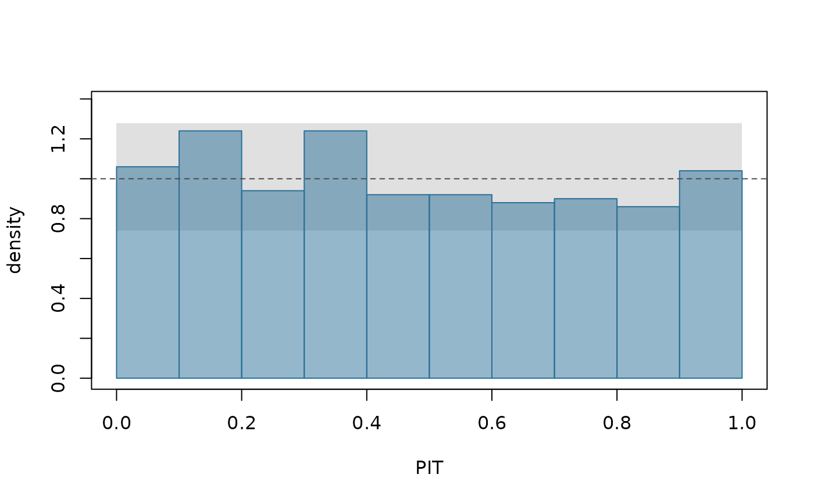

Histogram of probability integral transforms
Source:R/ilm_plot_pit.R, R/zzz-iml-aliases.R
ilm_plot_pit.RdPlots PITs from ilm_pit() as a histogram on the density scale, where a
correct predictive distribution gives a flat histogram at height 1. The
shaded band is where each bar falls with probability level if the PITs
really are uniform.
Arguments
- x
PITs from
ilm_pit(), or any numbers between 0 and 1.- bins
Number of bars.
- level
Coverage of the shaded band under uniformity.
- ...
Passed to
tinyplot::tinyplot().
Reading the plot
Flat, within the band: the outcomes fell where their predictive distributions said they would. The band holds for each bar on its own, so with many bars one may stray outside it by chance.
U shape, high at both ends: too many outcomes fell in the tails. This often means predictive distributions too narrow.
Hump, high in the middle: intervals too wide on average.
Triangle, sloping one way: the predictions are biased, too high if the bars rise towards 0, too low if they rise towards 1.
The shapes are those Gneiting, Balabdaoui and Raftery (2007, p. 253) describe; which way a triangle points is limn's own reading of it. For a verdict with what to do about it, use ilm_calibration().
References
Gneiting, T., Balabdaoui, F. and Raftery, A. E. (2007). Probabilistic forecasts, calibration and sharpness. Journal of the Royal Statistical Society B 69, 243-268. Section 3.1, p. 253.
See also
ilm_pit(), which computes the PITs;
ilm_calibration() for a verdict.
Examples
u <- runif(500)
ilm_plot_pit(u)
